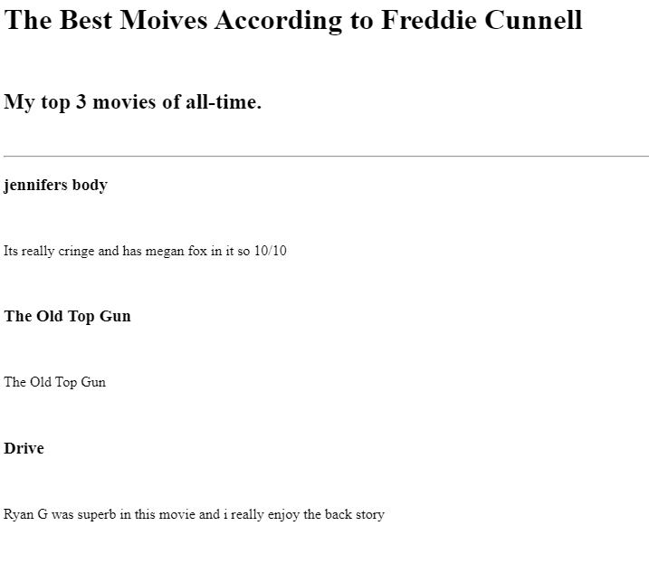
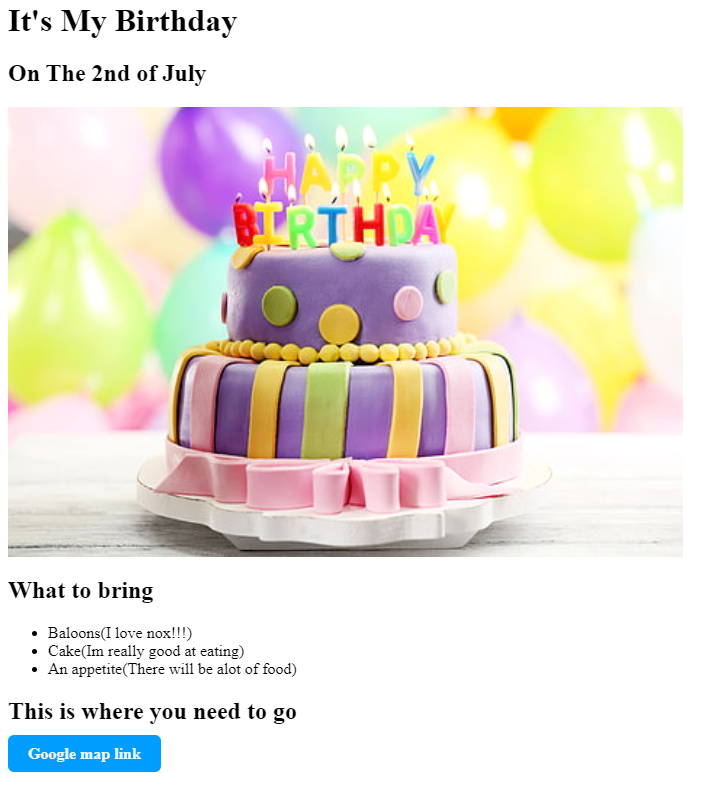

My Personal Portfolio Website
Hi Im Freddie Cunnell I Am Currently Learning How To Become A Web Developer
This was the first project i ever did
I used simple elements such as P and h1-h3 helping it seem more formal.

Moive Ranking Project
This is my second project that i worked on
I also had some help from a friend who showed me how to style using code, you can see this in the button that i used instead of having a simple link down bellow at the bottom of the img.

Link To Birthday Invite Projct
About Me
Contact details
About Me